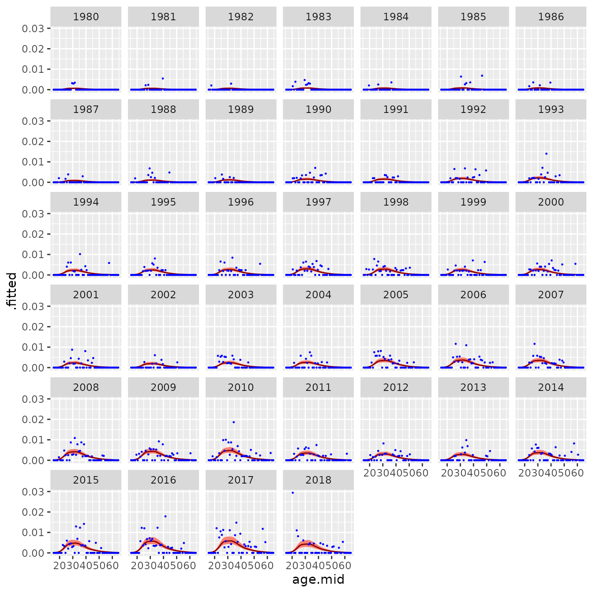

Divorces in China
vig2_cn.RmdIntroduction
In this vignette, we use BayesRates to calculate smoothed age-specific divorce rates in China. The input data come from household surveys, and sample sizes are small.
Packages
We load BayesRates and the two tidyverse packages dplyr and ggplot.
library(BayesRates)
#> Error in get(paste0(generic, ".", class), envir = get_method_env()) :
#> object 'type_sum.accel' not found
library(dplyr)
#>
#> Attaching package: 'dplyr'
#> The following objects are masked from 'package:stats':
#>
#> filter, lag
#> The following objects are masked from 'package:base':
#>
#> intersect, setdiff, setequal, union
library(ggplot2)Data
Our data on divorces is cn_divorces, a data frame that
is part of the BayesRates package. `cn_divorces has
four columns:
-
age: an integer vector with values 15,…,64;
-
sex: a character vector with values “Female” and “Male”;
-
time: an integer vector with values 1980,…,2018; and -
nevent: a numeric vector with the number of divorces.
cn_divorces
#> # A tibble: 3,900 × 4
#> age sex time nevent
#> <int> <chr> <int> <int>
#> 1 15 Female 1980 0
#> 2 15 Female 1981 0
#> 3 15 Female 1982 0
#> 4 15 Female 1983 0
#> 5 15 Female 1984 0
#> 6 15 Female 1985 0
#> 7 15 Female 1986 0
#> 8 15 Female 1987 0
#> 9 15 Female 1988 0
#> 10 15 Female 1989 0
#> # ℹ 3,890 more rowscn_population contains data on population, and is also
part of the BayesRates. Its columsn are:
-
age: an integer vector with values 15,…,64;
-
sex: a character vector with values “Female” and “Male”;
-
time: an integer vector with values 1980,…,2018; and -
py: a numeric vector with person-years of exposure.
cn_population
#> # A tibble: 3,900 × 4
#> age sex time py
#> <int> <chr> <int> <dbl>
#> 1 15 Female 1980 489.
#> 2 15 Female 1981 494.
#> 3 15 Female 1982 462.
#> 4 15 Female 1983 496.
#> 5 15 Female 1984 496.
#> 6 15 Female 1985 514.
#> 7 15 Female 1986 535.
#> 8 15 Female 1987 458.
#> 9 15 Female 1988 434.
#> 10 15 Female 1989 468.
#> # ℹ 3,890 more rowsThe person-years of exposure are quite small, and over 70 percent of divorce counts equal zero.
Fitting a model
We use function smooth_agetime() to smooth the observed
rates across age and time, separately for each sex.
res <- smooth_agetime(nevent_df = cn_divorces,
py_df = cn_population,
spec_time = TimeFixed(),
byvar = "sex")-
nevent_dfis the data frame for numbers of events -
py_dfis the data frame for person years of exposure -
spec_timeis the model used for age-time interactions. Given the limited data, we use a simple model in which the overall level changes with time but the age-pattern remains constant.
By default, smooth_agetime() models age effects (as
opposed to age-time interactions) using function Spline(),
which uses penalised splines to smooth over age groups. The degree of
smoothness in Spline() can be controlled via function
df.
A summary of the model can be obtained by printing the model object.
res
#> --- Object of class "BayesRates_results" ---
#>
#> nevent ~ Poisson(rate * py)
#> log(rate) = age_effect + time_effect
#> age_effect ~ Spline()
#> time_effect ~ TimeFixed()
#>
#> agevar: age
#> timevar: time
#> byvar: sex
#> n_draw: 1000- The number of events is modeled by a Poisson distribution with mean equal to an underlying rate multiplied by person-years of exposure
- The logarithm of the underlying rate equals the age effect plus the time effect
- The model for the age effect is Spline()
- The model for the time effect is TimeFixed()
-
agevaris"age". BayesRates is assuming that the variable called"age"identifies age groups -
timevaris"time". BayesRates is assuming that the variable called"time"identifies time periods -
byvaris"sex"The model is fitted separately for each sex -
ndrawis 1000. By default functions such asaugment()andcomponents()(see below) produce 1000 draws from the posterior distribution.
Extracting results
Function augment() returns a data frame the combines the
input data model-based estimates of rates.
rates <- augment(res)
rates
#> # A tibble: 3,900 × 11
#> age sex time nevent py age.mid .fitted .lower .upper .probability
#> <int> <chr> <int> <int> <dbl> <dbl> <dbl> <dbl> <dbl> <list>
#> 1 15 Female 1980 0 489. 15.5 9.16e-6 2.53e-6 2.91e-5 <dbl>
#> 2 15 Female 1981 0 494. 15.5 9.50e-6 2.78e-6 2.88e-5 <dbl>
#> 3 15 Female 1982 0 462. 15.5 9.80e-6 3.23e-6 3.07e-5 <dbl>
#> 4 15 Female 1983 0 496. 15.5 1.15e-5 3.55e-6 3.43e-5 <dbl>
#> 5 15 Female 1984 0 496. 15.5 1.14e-5 3.73e-6 3.37e-5 <dbl>
#> 6 15 Female 1985 0 514. 15.5 1.22e-5 3.76e-6 3.60e-5 <dbl>
#> 7 15 Female 1986 0 535. 15.5 1.25e-5 3.86e-6 3.49e-5 <dbl>
#> 8 15 Female 1987 0 458. 15.5 1.34e-5 4.04e-6 3.98e-5 <dbl>
#> 9 15 Female 1988 0 434. 15.5 1.61e-5 5.36e-6 4.78e-5 <dbl>
#> 10 15 Female 1989 0 468. 15.5 1.81e-5 5.86e-6 5.45e-5 <dbl>
#> # ℹ 3,890 more rows
#> # ℹ 1 more variable: .observed <dbl>In the return value from augment()
-
age.midis the middle point for each single year of age; -
.fittedis the point estimate of the rat -
.lower,.upperare the lower and upper bounds of 95% credible intervals for the rates; and -
.probabilityis a list containing the posterior draws of the rate.
We extract and graph the rates for females.
rates_female <- rates |>
filter(sex == "Female")
ggplot(rates_female, aes(x = age.mid)) +
facet_wrap(vars(time)) +
geom_ribbon(aes(ymin = .lower, ymax = .upper),
fill = "salmon") +
geom_line(aes(y = .fitted),
color = "darkred") +
geom_point(aes(y = .observed),
color = "blue",
size = 0.2)
Total rates
Function total_rate() sums across age groups to give the
total divorce rate.
total_rate <- total_rate(res)
total_rate
#> # A tibble: 78 × 7
#> sex time .fitted .lower .upper .probability .observed
#> <chr> <int> <dbl> <dbl> <dbl> <list> <dbl>
#> 1 Female 1980 0.0122 0.00629 0.0223 <dbl [1,000]> 0.00951
#> 2 Female 1981 0.0123 0.00696 0.0209 <dbl [1,000]> 0.00992
#> 3 Female 1982 0.0130 0.00781 0.0214 <dbl [1,000]> 0.00497
#> 4 Female 1983 0.0153 0.00957 0.0243 <dbl [1,000]> 0.0213
#> 5 Female 1984 0.0149 0.00955 0.0234 <dbl [1,000]> 0.00810
#> 6 Female 1985 0.0164 0.0104 0.0253 <dbl [1,000]> 0.0225
#> 7 Female 1986 0.0162 0.0104 0.0250 <dbl [1,000]> 0.0108
#> 8 Female 1987 0.0175 0.0114 0.0262 <dbl [1,000]> 0.0105
#> 9 Female 1988 0.0212 0.0144 0.0314 <dbl [1,000]> 0.0264
#> 10 Female 1989 0.0235 0.0162 0.0342 <dbl [1,000]> 0.0121
#> # ℹ 68 more rowsWe plot model-based (orange) and direct (blue) estimates of the total divorce rate in China.
ggplot(total_rate,
aes(x = time, y = .fitted, ymin = .lower, ymax = .upper)) +
facet_wrap(vars(sex)) +
geom_ribbon(fill = "salmon") +
geom_line() +
geom_point(aes(y = .observed),
col = "blue")
Imputing missing values
It is common, in demographic data, to have missing values for some years. BayesRates automatically imputes values for years with missing data.
To illustrate, we first create datasets where data is only available for every fifth year.
cn_divorces_5 <- cn_divorces |>
filter(time %in% seq(1980, 2018, 5))
cn_population_5 <- cn_population |>
filter(time %in% seq(1980, 2018, 5))We use smooth_agetime() to smooth rates across age and
time, separately for each sex.
res_5 <- smooth_agetime(nevent_df = cn_divorces_5,
py_df = cn_population_5,
spec_time = TimeFixed(),
byvar = "sex")
res_5
#> --- Object of class "BayesRates_results" ---
#>
#> nevent ~ Poisson(rate * py)
#> log(rate) = age_effect + time_effect
#> age_effect ~ Spline()
#> time_effect ~ TimeFixed()
#>
#> agevar: age
#> timevar: time
#> byvar: sex
#> n_draw: 1000When we use augment() function, we only obtain estimates
for the observed years.
rates_5 <- augment(res_5)
rates_5
#> # A tibble: 800 × 11
#> age sex time nevent py age.mid .fitted .lower .upper .probability
#> <int> <chr> <int> <int> <dbl> <dbl> <dbl> <dbl> <dbl> <list>
#> 1 15 Female 1980 0 489. 15.5 1.47e-5 2.32e-6 1.10e-4 <dbl>
#> 2 15 Female 1985 0 514. 15.5 2.08e-5 3.28e-6 1.23e-4 <dbl>
#> 3 15 Female 1990 0 385. 15.5 3.28e-5 5.34e-6 1.99e-4 <dbl>
#> 4 15 Female 1995 0 345. 15.5 4.18e-5 7.01e-6 2.43e-4 <dbl>
#> 5 15 Female 2000 0 421. 15.5 5.27e-5 8.61e-6 3.16e-4 <dbl>
#> 6 15 Female 2005 0 744 15.5 6.71e-5 1.11e-5 3.71e-4 <dbl>
#> 7 15 Female 2010 0 421 15.5 9.27e-5 1.53e-5 5.11e-4 <dbl>
#> 8 15 Female 2015 0 262. 15.5 8.55e-5 1.39e-5 4.85e-4 <dbl>
#> 9 15 Male 1980 0 491. 15.5 1.08e-5 1.83e-6 7.58e-5 <dbl>
#> 10 15 Male 1985 0 496. 15.5 2.20e-5 4.32e-6 1.40e-4 <dbl>
#> # ℹ 790 more rows
#> # ℹ 1 more variable: .observed <dbl>However, when we use components() to extract model-based
estimates of rates, we also obtain estimates for the gap years.
rates_5_com <- components(res_5, what = "rates")
rates_5_com
#> # A tibble: 3,600 × 8
#> sex age age.mid time .fitted .lower .upper .probability
#> <chr> <int> <dbl> <int> <dbl> <dbl> <dbl> <list>
#> 1 Female 15 15.5 1980 0.0000147 0.00000232 0.000110 <dbl [1,000]>
#> 2 Female 15 15.5 1981 0.0000154 0.00000245 0.000115 <dbl [1,000]>
#> 3 Female 15 15.5 1982 0.0000174 0.00000251 0.000112 <dbl [1,000]>
#> 4 Female 15 15.5 1983 0.0000177 0.00000278 0.000112 <dbl [1,000]>
#> 5 Female 15 15.5 1984 0.0000195 0.00000291 0.000123 <dbl [1,000]>
#> 6 Female 15 15.5 1985 0.0000208 0.00000328 0.000123 <dbl [1,000]>
#> 7 Female 15 15.5 1986 0.0000225 0.00000354 0.000146 <dbl [1,000]>
#> 8 Female 15 15.5 1987 0.0000250 0.00000356 0.000151 <dbl [1,000]>
#> 9 Female 15 15.5 1988 0.0000272 0.00000396 0.000164 <dbl [1,000]>
#> 10 Female 15 15.5 1989 0.0000299 0.00000470 0.000183 <dbl [1,000]>
#> # ℹ 3,590 more rows
rates_5_com_female <- rates_5_com |>
filter(sex == "Female")
ggplot(rates_5_com_female, aes(x = age.mid)) +
facet_wrap(vars(time)) +
geom_ribbon(aes(ymin = .lower, ymax = .upper),
fill = "salmon") +
geom_line(aes(y = .fitted),
color = "darkred")total_rate() also produces estimates for all years,
including ones without data.
total_rate_5 <- total_rate(res_5)Credible intervals are wider in years without data.
ggplot(total_rate_5,
aes(x = time, y = .fitted, ymin = .lower, ymax = .upper)) +
facet_wrap(vars(sex)) +
geom_ribbon(fill = "salmon") +
geom_line(col = "darkred") +
geom_point(aes(y = .observed),
col = "blue")
#> Warning: Removed 56 rows containing missing values or values outside the scale range
#> (`geom_point()`).